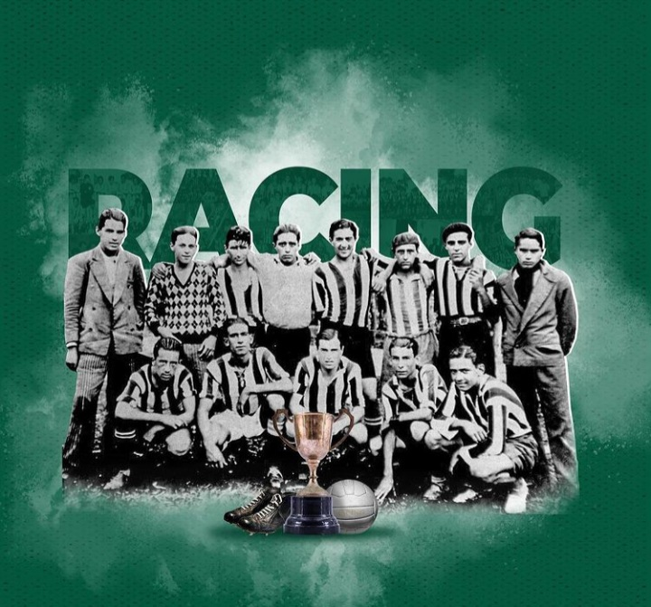
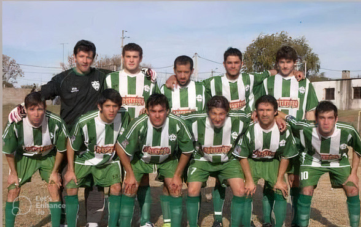

HISTORIA
El Club Atlético Racing, "la academia", fué fundado el 12 de mayo de 1937 en Mercedes, Soriano.
Un grupo de 8 amigos, deseosos de jugar al futbol, envían notas a clubes de Montevideo solicitando colaboración para conseguir championes, remeras y lo necesario para practicar el deporte.
La única institución que responde al enviado de este grupo de amigos es Racing, la "escuelita" de Sayago. De ahí se toma el nombre y surge el Club Atlético Racing.

HITO SIGNIFICATIVO EN EL FUTBOL MERCEDARIO
Noviembre de 2009, Racing hacía lo impensado, soñado y deseado para los hinchas y para el futbol de Soriano, Mercedes.
Ganando el apertura, el clausura y el acumulado de manera INVICTA, conseguía su Bicampeonato tras haber salido campeon en el año anterior.
